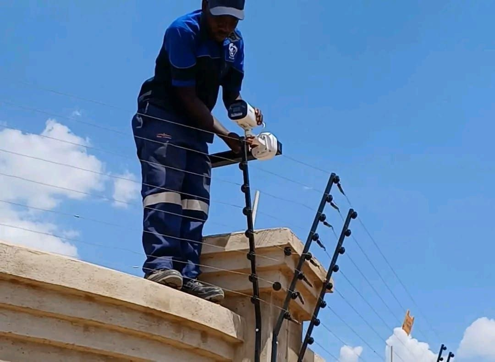

Service 01
Electric Fencing.
Intelligent perimeter protection designed for homes, estates, offices and commercial sites.

Secure your perimeter with confidence.
We install energized fence systems with strong brackets, correctly tensioned wires, zone testing and tamper protection. Every design is tailored to the boundary and level of protection your property needs.
What is included
- Site survey and fence layout
- Quality energizer, wiring and brackets
- Zone testing and handover guidance